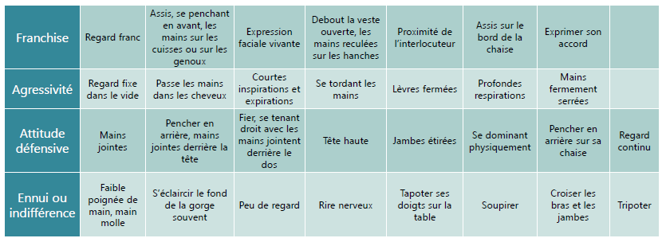

Sensibilisation ITIL
Module 08 – Savoir, Savoir-faire, Savoir-être
Objectifs
- Définir le savoir, les connaissances
- Définir le savoir-faire, les compétences
- Définir le savoir-être, les aptitudes
Quel est le rôle du technicien support ?
- Régler les incidents et les problèmes rencontrés par les utilisateurs.
- Diagnostiquer un incident.
- Effectuer une réparation matérielle.
- Proposer une solution de contournement.
- Commander et changer des matériels défectueux.
- Installer du nouveau matériel (intégrer et gérer un réseau).
- Surveiller la sécurité.
- Former les utilisateurs.
Quelles sont les compétences requises ?
Le savoir – connaissance
- Définition : faculté mentale produisant une assimilation par l’esprit d’un contenu objectif préalablement traduit en signes et en idées.
Le savoir-faire – compétence
- Définition : compétence acquise par l’expérience dans les problèmes pratiques, dans l’exercice d’un métier.
Le savoir-être – aptitude
- Définition : correspond à la capacité de produire des actions et des réactions adaptées à l’environnement humain et écologique.
Source Wikipédia
Compétences et profils
- Compétences professionnelles.
- Connaissances système.
- Connaissances réseau.
- Connaissances de l’ERP et du métier du client (workflow).
- Profils.
- Sens de l’écoute.
- Calme.
- Qualités relationnelles.
- Efficacité.
- Organisation.
- Veille technologique.
Savoirs - Connaissances
- Vous êtes-vous déjà dit ?
« J’ai déjà eu ce problème, mais je ne sais plus comment j’ai fait pour le régler. »
Pour éviter ce problème : - Il faut une bonne base de connaissance. - Wiki. - Logiciel interne. - Site intranet. - Logiciel de gestion de parc (GLPI). - Il faut une bonne veille technologique.
Le savoir
- Documentez les bonnes pratiques.
- Partagez les solutions pour les incidents communs.
- Permettez aux utilisateurs finaux de résoudre par eux-mêmes leurs incidents.
- Facilitez les recherches en rendant visible les articles qu'aux personnes nécessaires.
- Partagez vos idées, vos expériences, votre veille technologique.
Avantages
- Solutions pour les utilisateurs finaux 24/7 par un navigateur web.
- Réduit la charge de travail du service helpdesk.
- Améliore la productivité générale et donc l’efficience.
- Facilité d’utilisation et de partage.
- Réduction des temps de résolution qui permet de respecter les SLA.
Savoir-faire - Compétences
- La compétence désigne la mobilisation d’un ensemble de ressources en vue de résoudre une situation complexe.
La communication
La communication interne
- La communication externe tente de répondre à l’un des objectifs suivants :
- Faire passer une information, une connaissance ou une émotion.
- Créer un langage commun pour faciliter la compréhension (ITIL).
- Créer une relation pour être connu et ainsi fidélisé.
- Créer une influence pour inciter l’autre.
La communication interne
Permet :
- Implication.
- Adaptation au changement.
- Bonne ambiance.
- Disparition des rumeurs.
Le verbal
- L’émission des signaux ne signifie pas forcément leur bonne réception par le(s) récepteur(s)
- Une bonne communication nécessite la réception et la compréhension de l’information par le(s) destinataire(s).
- Vous êtes tour à tour émetteur et récepteur.
- Émetteur : soyez clair, précis et compréhensible.
- Récepteur : soyez disponible et sachez écouter (donc, vous taire).
Le non verbal
- Gestes naturels : mouvements d’instinct ou réflexes (haussement d’épaules).
- Gestes sociaux : mouvements volontaires, liés à la culture, à l’origine sociale.
- Regard : sa direction est une indication du degré d’intérêt porté à l’autre.
- Expression du visage : disponibilité d’esprit, degré de sympathie.
- Posture et mouvement : degré d’assurance, de disponibilité.
- Vêtements : statut social, style de vie, mais aussi mise en valeur de l’autre…


La technique
- Questionnement (découverte des besoins)
- Écoute (analyse des besoins)
- Reformulation (finalisation et obtention de oui)
Questionnement
- Questionnement ouvert : favorise la généralisation
- En quoi est-ce important ?
- Quel est votre avis ?
- Qu’est-ce que cela représente pour vous ?
- Questionnement fermé : favorise la spécification
- Quand ?
- Combien de fois ?
- Avec qui ?
- Êtes-vous d’accord ?
L’écoute
- Être ouvert à l’autre
- Lire entre les lignes du discours
- Percevoir l’environnement
- Écouter le message
- Objectifs
- Obtenir de l’information
- Rester ouvert aux perceptions de l’autre
- Comprendre le degré de motivation
La reformulation
- Redire avec d’autres mots ce que votre client vient d’exprimer
- Objectifs
- Montrer que l’on a écouté
- Vérifier que l’on a compris
- Éventuellement, faire préciser votre client
- Exemples
- Ainsi selon vous …
- Si j’ai bien compris …
- Vous voulez dire …
- En somme, vous trouvez que …
- Trois méthodes de reformulation
- De reflet
- De résumé
- De clarification
- La reformulation
- Met en confiance
- Relance le débat
- Clarifie le débat
- Met en mots le ressenti
La communication écrite
Elle permet de véhiculer l’image de son auteur - L’écrit est indispensable dans la vie professionnelle - On adapte son écrit en fonction de son interlocuteur - Choix du vocabulaire - Texte concis - Document de synthèse pour les décideurs


Utiliser la messagerie
- Une communication rapide, instantanée
- Écrite
- Asynchrone
- Vers un ou plusieurs interlocuteurs
- Dotée de mémoire externe
- Synthétique, percutante
- Permet l’échange
Problèmes posés par la messagerie
- Stress
- Surcharge
- Urgence
- Interruption
- Dépersonnalisation de la relation
- Aplatissement des structures hiérarchiques
- À ne pas confondre avec le chat
- Mauvaise interprétation
- Attention à la gestion de la confidentialité
Savoir-être - Aptitudes
- Sang-froid
- Disponibilité
- Rapidité d'adaptation
- Facilité de parole
- Rapidité d'analyse
- Écoute
Client agressif
- De mauvaise foi
- Ne reconnaissant surtout pas son erreur
- Suffisant
-
Désagréable
-
Ne pas insister, il ne s'agit pas d'avoir le dernier mot
- Si cela lui fait plaisir, lui laisser croire à sa supériorité
Client agressif
- Colérique
- Ne pas le laisser aller trop loin, il faut aussi se faire respecter
- Ne pas entrer dans son jeu en se mettant en colère aussi
- Garder son calme pour désamorcer le conflit, à s'énerver tout seul, il finira par se sentir ridicule
Client stressé
- Évaluer le niveau du blocage
- Blocage partiel
- Blocage total
- Rassurer l'utilisateur et montrer que :
- Vous prenez les choses en main
- Vous prenez en compte son urgence
Client malhabile
- Débutant sur son logiciel
- Se mettre à sa place
- Le déculpabiliser
- Réfractaire à l'informatique
- Jouer la complicité avec humour
- L'encourager à persévérer si possible
Phrases à proscrire
- Ne pas dire
- Je ne sais pas
- Dire
- Je vais me renseigner
- Votre problème est relativement complexe
- Fixer un délai
- Phrases à proscrire
- Ne pas dire
- Je ne comprends pas ce qu’il se passe
- Dire
- Il y a sûrement une explication
- Phrases à proscrire
- Ne pas dire
- Vous avez commis une erreur
- Dire
- Ce programme est complexe à utiliser
- Le déculpabiliser sans remettre en cause la qualité du logiciel
- Phrases à proscrire
- Ne pas dire
- On m’a répondu …
- Un collègue m’a dit …
- Dire
- J’ai trouvé la solution
- Phrases à proscrire
- Ne pas dire
- Ce logiciel est nul
- Dire
- Ne pas décourager l’utilisateur / le client, mais plutôt le stimuler en lui laissant entrevoir toutes les capacités du logiciel une fois qu’il le maîtrisera
- Phrases à proscrire
- Ne pas dire
- Je ne comprends pas ce que vous dîtes
- Dire
- Essayer de reformuler ce que le client a pu vous dire
- Si ce n’est pas possible
- Lui laisser entendre que son problème n’est pas simple
- Éviter les questions trop larges
- Essayer de définir avec lui le problème étape par étape en reformulant ce que vous avez compris à chaque étape de son explication